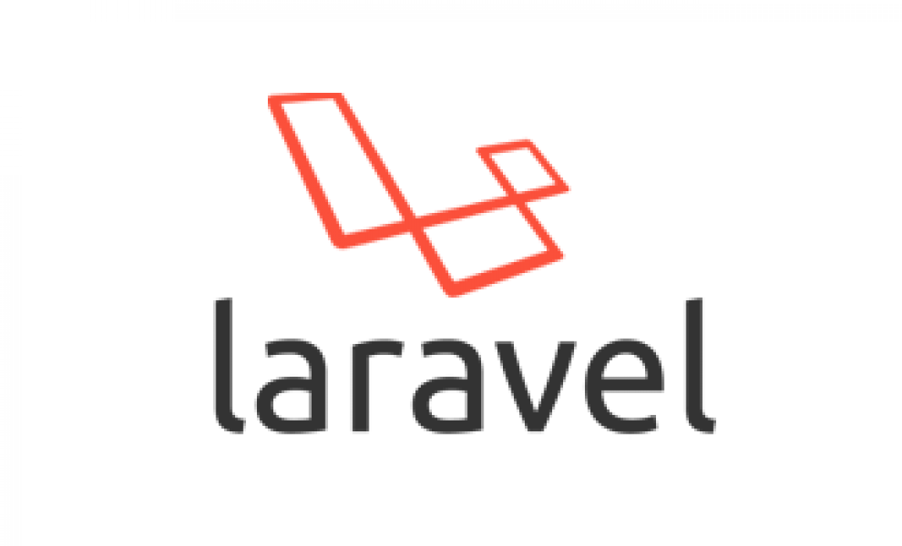
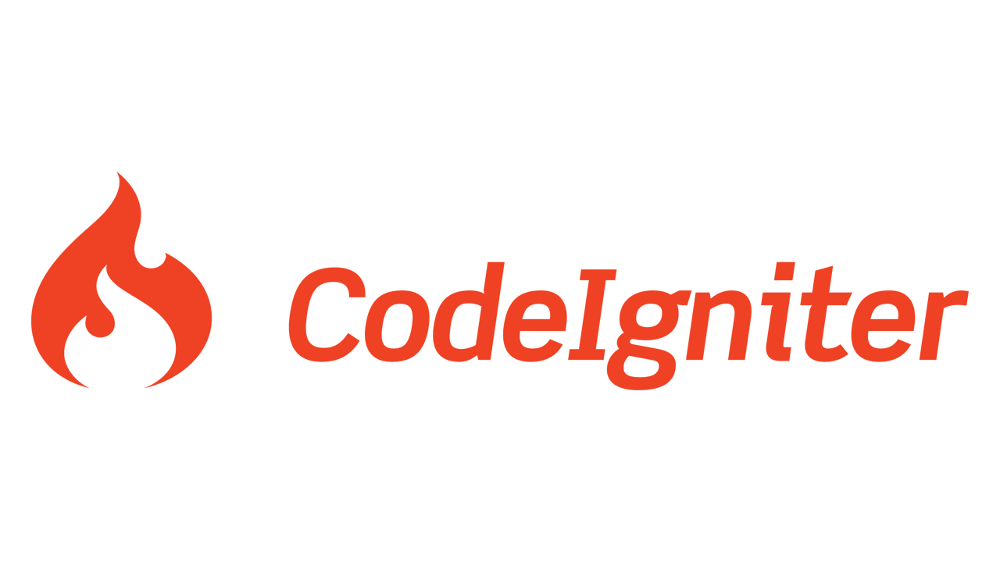

PHP: Серверный язык программирования

PHP (Hypertext Preprocessor) — один из самых популярных языков программирования...
- Легкость в изучении и использовании даже для новичков.
- Быстрая интеграция с HTML и поддержка различных баз данных.
- Огромное сообщество и обширная документация.
Популярные фреймворки на PHP
Фреймворки на PHP упрощают разработку сложных веб-приложений, предоставляя готовую структуру и набор инструментов для создания надежного и масштабируемого кода.
Laravel
Laravel — один из самых популярных фреймворков PHP, известный своей элегантностью и удобством использования. Он предоставляет широкий набор инструментов, включая маршрутизацию, миграции баз данных, шаблонизатор Blade и поддержку API.
Symfony
Symfony — мощный фреймворк для разработки корпоративных приложений. Он известен своей модульной структурой и большим набором компонентов, которые могут использоваться отдельно или вместе для создания сложных решений.
CodeIgniter
CodeIgniter — легкий и быстрый фреймворк, подходящий для создания небольших и средних проектов. Он прост в освоении и имеет минимальные требования к серверу.
Применение PHP в веб-разработке
PHP используется в различных аспектах веб-разработки и является основой многих популярных сайтов и приложений.
- Создание динамических сайтов: PHP позволяет создавать страницы, которые изменяются в зависимости от действий пользователя.
- Работа с базами данных: PHP поддерживает соединение с различными базами данных.
- Разработка RESTful API: PHP часто используется для создания серверной части RESTful API.
- Контент-менеджмент: Системы управления контентом (CMS) на базе PHP, такие как WordPress и Joomla.